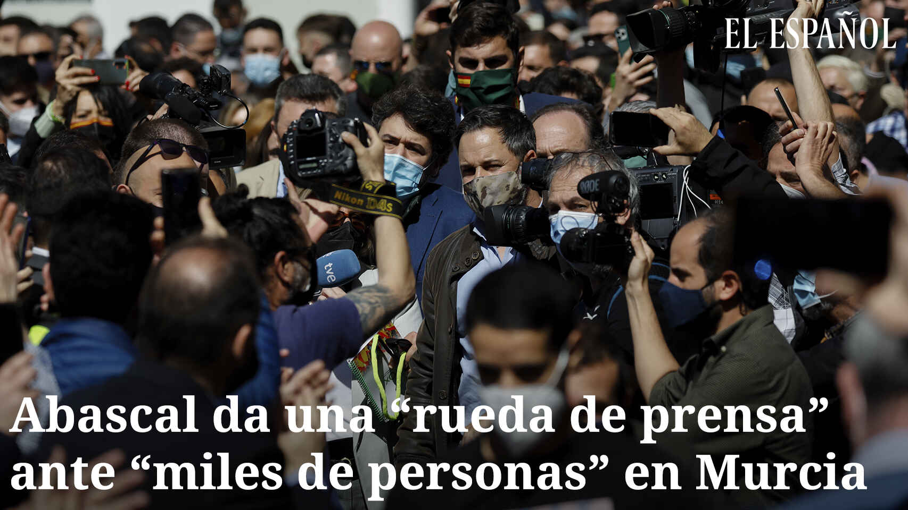

El coronavirus no existe y no hay que aislarse: llega el negacionismo del Covid-19
Los kioscos son unos de los pocos comercios considerados de bienes esenciales y, por esta razón, no es del todo extraño acudir a uno de ellos en estos días de cuarentena.Si usted no es uno de los más concienciados con las medidas de confinamiento decretadas por el Gobierno en el estado de alarma, puede que además de comprar su periódico o revista habitual se quede echando un vistazo a lo que su profesional tiene expuesto.
Y allí, entre revistas que nos cuentan lo diferente que es el confinamiento de las
celebrities y las personas normales o
magazines que nos hablan de la naturaleza, podría usted observar otra publicación.Antes de fijarse en el nombre, no cabe duda de que le llamará la atención su titular principal: 'Claves para entender la pandemia del Sars CoV-2' y justo a la izquierda de éste, otro: 'No hay pruebas de la existencia del 'coronavirus chino'.
La revista cuesta cuatro euros y su título no puede dar más que tranquilidad.
Discovery Salud , pensaría cualquiera, es una publicación sobre salud.Al fin y al cabo y como cuenta a EL ESPAÑOL Emilio Molina, vicepresidente de APETP (Asociación para Proteger al Enfermo de
Terapias Pseudocientíficas), RedUNE y Círculo escéptico, se puede encontrar incluso en tiendas de hospitales.
Que esta pandemia del nuevo coronavirus provoque bulos no es algo nuevo, pero lo que sí llama la atención, dado el elevado número de contagios y fallecimientos que se comunican por doquier, es que a esos bulos, entre los que destaca que el coronavirus se creó en un laboratorio con la colaboración de China, EEUU y hasta el mismísimo Bill Gates- se les sume el negacionismo.O al menos llama la atención a alguien lego en la materia.
No es el caso de Molina, que comenta cómo esta publicación -y otros medios digitales similares como
Plural 21 ,
Mindalia TV ,
La Caja de Pandora o
Dulce Revolución - tiene un largo historial de negar enfermedades, desde el sida al cáncer.
Pero lo que sí diferencia esta pandemia de otras es que está sirviendo de catalizador para difundir aceleradamente su doctrina, cuenta Molina.'Esto son los resultados de que se haya sido tan permisivos estas décadas; para la próxima pandemia la base de creyentes se está multiplicando por cuatro', calcula.
El
modus operandi es bien conocido por los miembros de estas asociaciones.Se aprovechan de una situación en la que reina la incertidumbre -un virus nuevo del que se van conociendo datos con cuentagotas- y que genera una 'angustia tremenda'.
Ante eso, los difusores del negacionismo ofrecen un mensaje reconfortante: 'Yo te doy la verdad.Esto no está sucediendo y que nos digan que nos quedemos en casa no es más que una herramienta de control gubernamental, ya que no hay ningún peligro'.
Es 'una oportunidad de oro' para esta gente, insiste el experto, que añade que YouTube es la principal plataforma donde se están difundiendo estas teorías, a pesar de que la empresa está continuamente retirando vídeos falsos.'Hemos detectado alrededor de medio millar de lo que llamamos los
coronabulos ', resalta.
Pero, ¿cuál es la base del negacionismo no ya de los tratamientos o de que el aislamiento sea eficaz, sino del mismísimo
Sars CoV-2 ?Predominan dos teorías: la primera ya la aplican a otras enfermedades -concepto que directamente muchos de ellos niegan- y no es otra que que las manifestaciones físicas que conocemos como tal no son más que reacciones psicosomáticas a los que nos preocupa mentalmente, a nuestros traumas.
La segunda, que ha nacido más concretamente unida a esta pandemia, opina que el coronavirus es falso y que todo lo que ha conllevado, especialmente el confinamiento, no es más que una estrategia del Gobierno para poder controlarnos mejor a través de las redes 5G, que protagonizan a su vez un
subbulo : son las responsables de la dispersión del patógeno.Esta segunda variante provocó que la semana pasada se quemaran varias torres de telefonía móvil en Reino Unido que los asaltantes pensaban que eran de 5G, aunque este extremo no ha sido demostrado.Lo mismo acaba de suceder en Holanda.
Esto, que puede parecer una contradicción -¿cómo se puede no creer en un virus y, al mismo tiempo, pensar que éste se dispersa por unas torres o por cualquier otro método?- es otra de las técnicas habituales de estos grupos.Asumir incongruencias mentales es otra de las técnicas habituales de estos grupos.'Son capaces de decirte que el cáncer no existe y en la misma frase que cualquiera de los remedios que promocionan lo cura', comenta Molina.
En lo que respecta a la tecnología 5G se da además otra paradoja.Esta tecnología, que se ha desarrollado para poderse más contenido al móvil y de forma más rápida, no está del todo implantada en España.Pero lo que la pandemia del coronavirus ha provocado es precisamente lo contrario de lo que dicen los negacionistas: España ha frenado el desarrollo de la tecnología 5G de velocidad móvil ultrarrápida hasta nuevo aviso, con la promesa de poner todos los procedimientos en marcha una vez que la situación económica y social vuelva a la normalidad.
La pregunta del millón en estos casos es qué sentido tiene que este tipo de entidades o medios difundan teorías que se contradicen por sí solas.En muchos casos, señala Molina, se trata de 'hacer caja' a través de la venta de revistas, suscripciones o publicidad asociada a sus medios.Son personas que no creen lo que dicen y que no lo ponen en práctica en ellos mismos.Un ejemplo claro: el catalán Josep Pàmies, que factura alrededor dos millones de euros al año vendiendo plantas, infusiones y hasta lejía para curar todo tipo de enfermedades, recurrió raudo a un hospital público cuando le dio un infarto.
En otras ocasiones, los promotores de estas mentiras realmente se las creen.Viven en una realidad paralela y difunden sus teorías de la conspiración tanto como pueden, porque se creen de verdad que están haciendo un favor a la humanidad.
Otro grupo de difusores son aquellos engañados por los primeros o los segundos.Gente que no viven fuera de la realidad pero a la que les han colado los bulos, que ellos transmiten con buena intención.
Molina señala que ahora no es el mejor momento para pedir acciones contra esta gente, algo que, por cierto, llevan años haciendo.Sin embargo, cuando esto acabe volverán a pedir audiencia con los diferentes actores que pueden ayudar a acabar con esta plaga, no la del coronavirus, sino la de la desinformación en salud.
Posted On: 2020-04-13T03:06:00
Posted By: Ainhoa Iriberri


Content Date: 2020-04-13
Download Date: 2021-03-17
Document ID: L0C049ANH